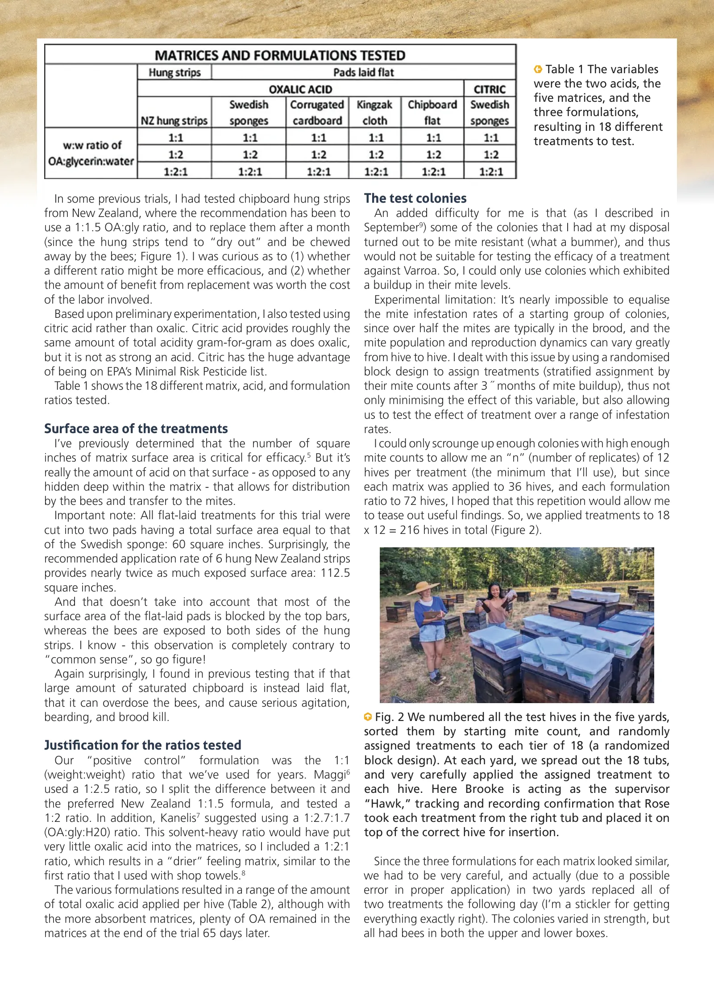

In some previous trials, I had tested chipboard hung strips
from New Zealand, where the recommendation has been to
use a 1:1.5 OA:gly ratio, and to replace them after a month
(since the hung strips tend to “dry out” and be chewed
away by the bees; Figure 1). I was curious as to (1) whether
a different ratio might be more efficacious, and (2) whether
the amount of benefit from replacement was worth the cost
of the labor involved.
Based upon preliminary experimentation, I also tested using
citric acid rather than oxalic. Citric acid provides roughly the
same amount of total acidity gram-for-gram as does oxalic,
but it is not as strong an acid. Citric has the huge advantage
of being on EPA’s Minimal Risk Pesticide list.
Table 1 shows the 18 different matrix, acid, and formulation
ratios tested.
Surface area of the treatments
I’ve previously determined that the number of square
inches of matrix surface area is critical for efficacy.5 But it’s
really the amount of acid on that surface - as opposed to any
hidden deep within the matrix - that allows for distribution
by the bees and transfer to the mites.
Important note: All flat-laid treatments for this trial were
cut into two pads having a total surface area equal to that
of the Swedish sponge: 60 square inches. Surprisingly, the
recommended application rate of 6 hung New Zealand strips
provides nearly twice as much exposed surface area: 112.5
square inches.
And that doesn’t take into account that most of the
surface area of the flat-laid pads is blocked by the top bars,
whereas the bees are exposed to both sides of the hung
strips. I know - this observation is completely contrary to
“common sense”, so go figure!
Again surprisingly, I found in previous testing that if that
large amount of saturated chipboard is instead laid flat,
that it can overdose the bees, and cause serious agitation,
bearding, and brood kill.
Justification for the ratios tested
Our “positive control” formulation was the 1:1
(weight:weight) ratio that we’ve used for years. Maggi6
used a 1:2.5 ratio, so I split the difference between it and
the preferred New Zealand 1:1.5 formula, and tested a
1:2 ratio. In addition, Kanelis7 suggested using a 1:2.7:1.7
(OA:gly:H20) ratio. This solvent-heavy ratio would have put
very little oxalic acid into the matrices, so I included a 1:2:1
ratio, which results in a “drier” feeling matrix, similar to the
first ratio that I used with shop towels.8
The various formulations resulted in a range of the amount
of total oxalic acid applied per hive (Table 2), although with
the more absorbent matrices, plenty of OA remained in the
matrices at the end of the trial 65 days later.
Fig. 2 We numbered all the test hives in the five yards,
sorted them by starting mite count, and randomly
assigned treatments to each tier of 18 (a randomized
block design). At each yard, we spread out the 18 tubs,
and very carefully applied the assigned treatment to
each hive. Here Brooke is acting as the supervisor
“Hawk,” tracking and recording confirmation that Rose
took each treatment from the right tub and placed it on
top of the correct hive for insertion.
Table 1 The variables
were the two acids, the
five matrices, and the
three formulations,
resulting in 18 different
treatments to test.
The test colonies
An added difficulty for me is that (as I described in
September9) some of the colonies that I had at my disposal
turned out to be mite resistant (what a bummer), and thus
would not be suitable for testing the efficacy of a treatment
against Varroa. So, I could only use colonies which exhibited
a buildup in their mite levels.
Experimental limitation: It’s nearly impossible to equalise
the mite infestation rates of a starting group of colonies,
since over half the mites are typically in the brood, and the
mite population and reproduction dynamics can vary greatly
from hive to hive. I dealt with this issue by using a randomised
block design to assign treatments (stratified assignment by
their mite counts after 3 ½ months of mite buildup), thus not
only minimising the effect of this variable, but also allowing
us to test the effect of treatment over a range of infestation
rates.
I could only scrounge up enough colonies with high enough
mite counts to allow me an “n” (number of replicates) of 12
hives per treatment (the minimum that I’ll use), but since
each matrix was applied to 36 hives, and each formulation
ratio to 72 hives, I hoped that this repetition would allow me
to tease out useful findings. So, we applied treatments to 18
x 12 = 216 hives in total (Figure 2).
Since the three formulations for each matrix looked similar,
we had to be very careful, and actually (due to a possible
error in proper application) in two yards replaced all of
two treatments the following day (I’m a stickler for getting
everything exactly right). The colonies varied in strength, but
all had bees in both the upper and lower boxes.